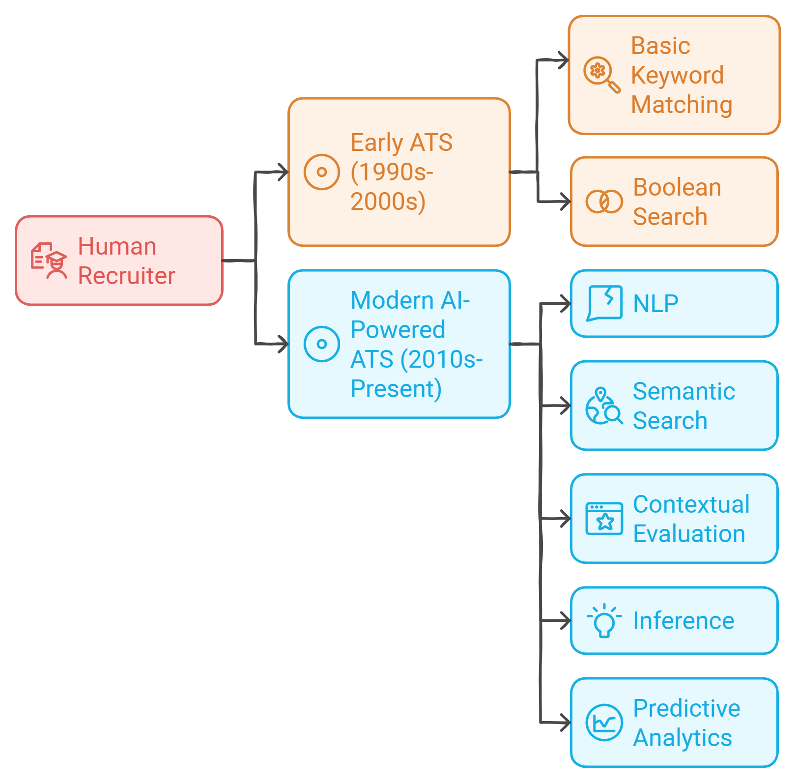
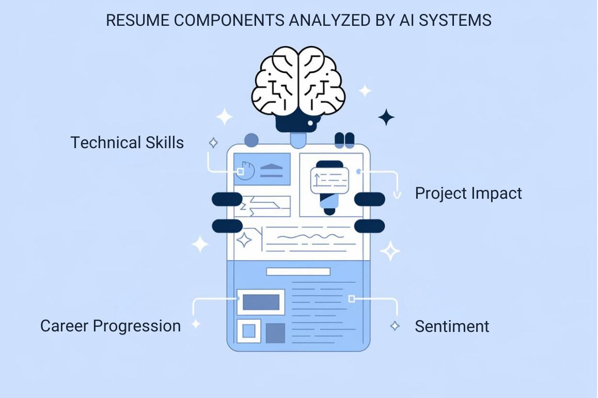
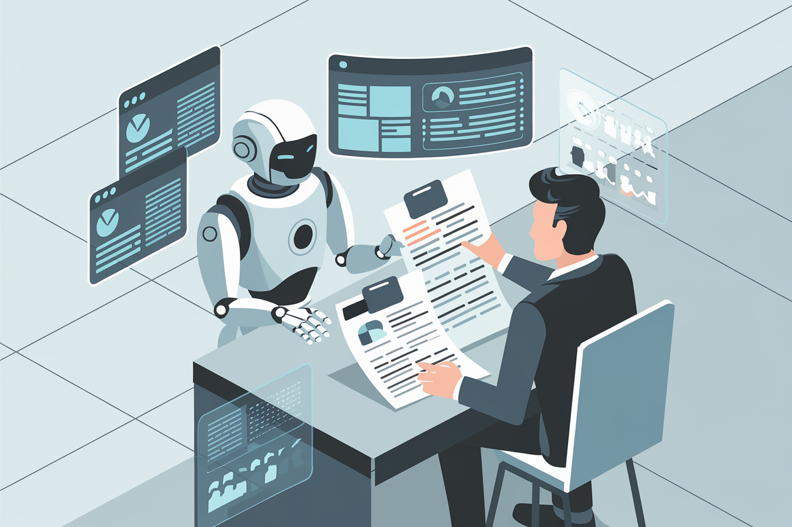

Chapter 1: Understanding AI in the Hiring Process
1.1 The Role of AI in the Modern Hiring Process
The job market has shifted dramatically with the advent of AI. Today, AI such as Applicant Tracking Systems (ATS) significantly impact the hiring process. As a tech professional, understanding how AI evaluates your resume is essential to maximizing your chances of landing an interview.
In this chapter, we'll demystify the role of AI in modern hiring processes. Consider it your personal tour through the job application Matrix. By the end, you'll be dodging AI bullets and landing interviews like Neo himself.
1.2 Evolution of Applicant Tracking Systems (ATS)
From Keywords to Semantic Understanding: Teaching Old Dogs New Tricks
Applicant Tracking Systems have come a long way from simple database tools that searched for specific keywords.
Early ATS (1990s-2000s): Basic Keyword Matching
- Basic keyword matching (as sophisticated as a game of "Where's Waldo?")
- Boolean search capabilities (AND, OR, NOT... but mostly NOT getting you the job)
- Often resulted in qualified candidates being overlooked due to lack of exact keyword matches
Modern AI-Powered ATS (2010s-Present): Semantic Search and Contextual Evaluation
- Natural Language Processing (NLP) integration
- Semantic understanding of resume content
- Ability to infer skills and experiences
- Predictive analytics for candidate success (part crystal ball, part supercomputer)

Key Takeaway: Your resume must demonstrate not just what you know, but how you apply your knowledge in real-world scenarios. It's time to evolve from a list of keywords to a narrative of impact.
1.3 How AI Analyzes STEM Resumes
Understanding the AI's perspective can help you craft a more effective resume. Let's peek into the digital mind of AI and see what it focuses on in STEM resumes:
In addition to keyword matching, modern ATS tools employ Natural Language Processing (NLP) and machine learning techniques to analyze the context in which skills and experiences are presented. This enables the system to assess the depth of a candidate's skills and understand how their experience fits the needs of a specific role, providing a much more nuanced assessment than older ATS systems.
1. Technical Skill Extraction and Evaluation
AI doesn't just list your skills; it evaluates them in context. It's not impressed by your laundry list of programming languages—it wants to see how you've used them to solve real-world problems.
The AI considers:
- The recency of your experience with a particular technology (because coding in FORTRAN might not be your ticket to that cutting-edge tech startup)
- The complexity of projects where you've applied a skill (building a "Hello World" app won't cut it)
- The relevance of your skills to current industry trends (bonus points if you can predict the next big thing)
Example: An AI system might give more weight to a candidate who has recent experience with TensorFlow in a complex machine learning project, compared to someone who lists it as a skill but hasn't applied it since their college days when they used it to predict their chances of passing Calculus III.
2. Project Impact Assessment
AI systems are trained to look for quantifiable impacts. They prioritize:
- Metrics that demonstrate the scale of your work (e.g., size of datasets, user base impacted)
- Efficiency improvements or cost savings you've achieved (because even AI loves a good bargain)
- Innovations or novel solutions you've developed (bonus points for inventing the next sliced bread)
Example: "Developed a machine learning algorithm that increased prediction accuracy by 35%, resulting in $2M annual savings" would be ranked higher than a vague statement like "Improved company's predictive modeling capabilities." The first one shows you're not just a coder, you're a money-saving superhero.
3. Career Progression Analysis
AI can map your career trajectory and assess:
- The pace of your professional growth (spacetime and relativity included)
- The increasing complexity of your roles and responsibilities (from code monkey to code maestro)
- Your adaptability to new technologies and methodologies (because in tech blah blah, the only constant is change blah blah)
Key Takeaway: Craft your resume to show a clear progression in skills, responsibilities, and impact throughout your career.

1.4 Natural Language Processing in Resume Analysis
Natural Language Processing (NLP) is a key technology in modern ATS. It's the reason why AI can understand your resume better than some humans (looking at you, Dave from HR). Here's how it impacts resume screening:
1. Contextual Understanding
NLP allows AI to understand the context in which words and phrases are used. This means:
- The system can distinguish between different uses of the same term (e.g. "Python" as a programming language vs. as a snake)
- It can infer skills that aren't explicitly stated based on project descriptions
2. Sentiment Analysis
Some advanced systems use sentiment analysis to gauge:
- The tone of your achievements (confident, tentative, or "please hire me, I have student loans")
- The enthusiasm in your descriptions of past roles and projects (because nothing says "hire me" like unbridled passion for data normalization)
3. Named Entity Recognition
NLP can identify and categorize named entities in your resume, such as:
- Companies you've worked for (from tech giants to that "startup")
- Technologies you've used (from COBOL to Kubernetes)
- Educational institutions you've attended (here's to hoping that alma mater is just sugar on top, not a crack in the bowl)
This helps in quickly assessing your background and experience relevance.
1.5 Machine Learning Algorithms in Candidate Ranking
Machine Learning (ML) plays a crucial role in how candidates are evaluated and ranked. Understanding these can help you optimize your resume for better positioning:
1. Predictive Analytics
ML models are trained on datasets of previously successful hires. Your resume is compared against these "ideal" profiles, like a game of "Guess Who?" where questions sound like "Does your candidate have experience in agile development?"
Example: If successful data scientists in a company often have a mix of statistical knowledge and programming skills, the ML model might rank candidates with this combination higher. So, if you're a statistician who codes or a coder who stats, the odds are in your favor.
2. Skill Clustering
ML can group similar skills and experiences together. This helps in identifying candidates with transferable skills for interdisciplinary roles.
Example: Experience in "data visualization" might be clustered with "business intelligence" skills. So, your knack for turning spreadsheets into eye-candy could land you a BI role.
3. Anomaly Detection
ML algorithms can flag unusual patterns in resumes. This could work in your favor (unique skills) or against you (unexplained career gaps or sudden career shifts). It's the resume equivalent of standing out in a crowd—great if you're a peacock, not so great if you're trying to blend in.
Key Takeaway: While optimizing for AI, ensure your resume accurately reflects your unique career journey and skillset. You're not just a collection of keywords—you're a superhero with a unique origin story.
1.6 The Human Element: Where AI and Recruiters Intersect
While AI plays a crucial role in initial screening, human recruiters remain integral to the hiring process. It's not (yet) a case of "The Terminator" vs HR. Understanding this intersection is key to crafting a resume that succeeds at all stages.

AI as a Decision Support Tool
Recruiters use AI to:
- Quickly identify top candidates from large applicant pools
- Ensure objective initial screening based on qualifications (no more hiring based on shared love for pineapple on pizza)
- Spot trends and insights that might not be immediately apparent (like the correlation between coffee consumption and code quality)
The Limitations of AI
It's important to remember that AI has limitations:
- AI may struggle with highly innovative or unique experiences (e.g. "Interplanetary Coding Champion" might not compute)
- It might not fully grasp the significance of cutting-edge research or emerging fields (your work on quantum-entangled neural networks might go over its head)
- Cultural fit and soft skills are still best assessed by humans (because AI hasn't mastered the art of water cooler small talk... yet)
Key Takeaway: Craft your resume to pass AI screening with flying colors while also providing clear, compelling information for human recruiters.
1.7 Ethical Considerations in AI-Powered Hiring
As STEM professionals, it's crucial to be aware of the ethical implications of AI in hiring. After all, today's job seeker might be tomorrow's AI developer!
1. Bias in AI Systems
AI systems can inadvertently perpetuate or even amplify biases present in their training data.
Example: If historical hiring data shows a gender imbalance in certain STEM roles, an AI system might inadvertently favor candidates of that gender. Suddenly, your ability to code is less important than your ability to grow a beard.
2. Data Privacy Concerns
The use of AI in hiring raises questions about data privacy and the ethical use of personal information. It's all fun and games until an AI knows more about your career than you do.
3. Transparency in AI Decision-Making
There's an ongoing debate about the level of transparency needed in AI-powered hiring decisions. Should candidates have the right to know why an AI rejected them? "Sorry, you weren't hired because our AI says you're a Hufflepuff" might not cut it.
Key Takeaway: Stay informed about these ethical considerations. They may impact how you approach your job search and your future role in developing or implementing AI systems.
1.8 Preparing for AI-Powered Interviews
Just when you thought you'd mastered the art of the firm handshake, some companies are now using AI in the interview process itself. Welcome to the future, where your interviewer might be more interested in your data than your dazzling smile.
1. Video Interview Analysis
AI can analyze facial expressions, tone of voice, and word choice in video interviews. So, practice your "I'm totally calm and not at all nervous" face.
2. Chatbot Screening
Initial screenings might be conducted by AI-powered chatbots. Time to brush up on small talk with Siri.
3. Skills Assessments
AI can administer and evaluate technical skills tests. No more bluffing your way through that whiteboard coding session.
Key Takeaway: Prepare for these AI-powered interview tools by practicing clear communication and getting comfortable with video interviews. Remember, even if you're talking to a bot, let your human side shine through. After all, we're not trying to create an army of perfectly optimized resume-bots—we're showcasing unique, talented individuals who happen to be fluent in both human and machine languages.
Chapter Summary
Let's recap our journey through the AI-powered hiring landscape:
- Modern ATS use sophisticated AI to analyze resumes comprehensively
- AI evaluates technical skills, project impacts, and career progression in context (it's not just counting keywords, it's reading between the lines)
- Natural Language Processing and Machine Learning play key roles in resume analysis (teaching machines to understand human nuances—what could possibly go wrong?)
- Despite AI's capabilities, human recruiters remain crucial in the hiring process
- Ethical considerations in AI-powered hiring are important for STEM professionals to understand
- Prepare for AI's role beyond resume screening, including in the interview process (remember to practice your binary small talk)
Practical Exercise: Optimize Your Resume for AI
Based on what you've learned, review your current resume and identify:
- Three areas where you can enhance AI-readability (think context, impact, and progression)
- Two unique experiences that showcase your value beyond keywords
- One way to quantify your impact that aligns with AI assessment priorities (numbers speak louder than words, especially to our silicon-based friends)
Remember, the goal is to create a resume that sings to both AI systems and human recruiters, like being fluent in Human and Algorithm.
Looking Ahead
In the next chapter, we'll dive into the new paradigm of STEM resumes and how to structure your information for maximum impact in an AI-driven hiring landscape. Get ready to transform your resume from a mere list of accomplishments into a compelling narrative that even a machine can appreciate. It's time to impress Alexa with your career story.
Quiz: "Chapter 1 Knowledge Check"
Test your understanding with this 5-question quiz on AI in the hiring process.
-
What is a key difference between modern AI-powered ATS and early ATS?
-
How does AI typically evaluate technical skills on a resume?
-
What role does Natural Language Processing play in resume analysis?
-
How do machine learning algorithms typically rank candidates?
-
What is an important ethical consideration in AI-powered hiring?
Answers: 1-b, 2-b, 3-b, 4-c, 5-c
How did you do? If you aced it, congratulations! You're well on your way to becoming an AI-resume whisperer. If not, don't worry—even (especially) AI needs a few iterations to get things right.